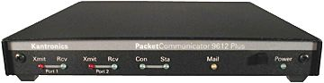

Kantronics KPC 9612 Plus Terminal Node Controller
Used to hit the local packet BBS scene and to play with TCP/IP over
Amateur Radio. (You haven't see anything until you've seen TCP/IP
at 1200 baud. Take a look sometime and you'll start to understand why
the Internet is so darned slow...)
The long-term goal is to provide some 9600-baud coverage of my
neighborhood and perhaps provide an internet gateway at 9600 (which
seems to be lacking in South Seattle...)